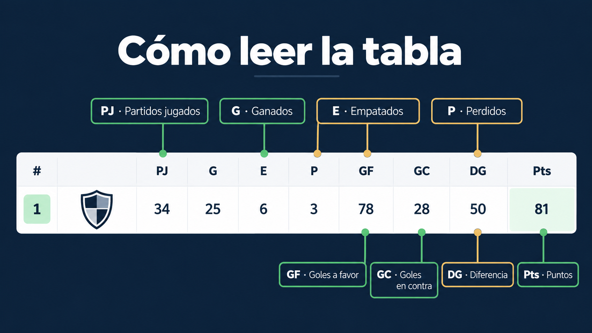

Posiciones, puntos, partidos jugados, goles y forma reciente del Apertura 2026, con fecha de corte visible.
Fecha de corte visibleOptimizado para móvilEnlaces internos a clubes y partidos
Corte de datos
Apertura 2026 · Jornada 9
La clasificación mostrada corresponde al corte manual registrado el 22 de septiembre de 2026. La posición, los puntos y los partidos jugados se actualizan únicamente al confirmar resultados; un juego pendiente o una corrección oficial puede modificar el orden.
Antes de seguir un partido, revisa el calendario. Para saber qué encuentro movió una posición, consulta los resultados confirmados.
Clasificación
Posiciones del torneo
PJ = partidos jugados, GF = goles a favor, GC = goles en contra y DG = diferencia de goles.
Datos manuales
#
Equipo
PJ
G
E
P
GF
GC
DG
Pts
Forma
G = ganadoE = empateP = perdido

Ejemplo ilustrativo: las cifras no corresponden a la clasificación vigente.
Guía de la tabla
Cómo leer la tabla de Liga MX
La tabla general muestra cómo va cada club en el torneo. Una victoria suma tres puntos, un empate suma uno y una derrota no suma. Si dos equipos tienen los mismos puntos, la diferencia de goles ayuda a comparar su rendimiento.
Además de los puntos, revisa los partidos jugados y la forma reciente. Un club puede estar arriba porque ya disputó más encuentros que otro. La fecha de corte te ayuda a saber qué tan reciente es la tabla.
Qué significan las abreviaturas
PJ indica partidos jugados, G victorias, E empates, P derrotas, GF goles a favor, GC goles en contra, DG diferencia de goles y Pts puntos. Puedes complementar la clasificación consultando los próximos partidos, los resultados y las fichas de equipos.
Cómo usar esta clasificación
Consulta puntos, partidos jugados y diferencia de goles antes de comparar posiciones. Si hay empate, revisa los criterios de desempate; la tabla se actualiza sólo con datos confirmados.
Cómo se actualiza esta información
Esta página se revisa cuando existe información confirmada. Los datos dinámicos se separan de las explicaciones evergreen para no presentar una estimación como resultado oficial. Consulta las páginas enlazadas para calendario, resultados, tabla y contexto de fase final.
Preguntas relacionadas
Si buscas una programación concreta, revisa el calendario; si el partido ya terminó, consulta resultados. La tabla general muestra el efecto deportivo después de actualizar datos confirmados.
Tabla general Liga MX 2026 al momento
Esta tabla reúne la clasificación vigente del torneo. Después de cada jornada consulta los resultados confirmados y revisa puntos, diferencia de goles y criterios de desempate.